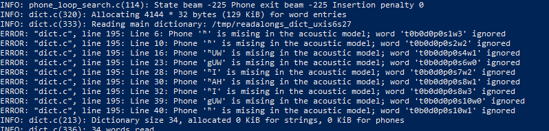

Note
This troubleshooting guide is under construction.
Troubleshooting
This document in intended to list common errors your may encounter when trying to run ReadAlongs, and ways to debug them.
It only ever got one contribution, but more can get added here as needed.
Phones missing in the acoustic model
Note
Troubleshooting item under construction
You may get an error that looks like this:
The general structure of your error would look like
Phone [character] is missing in the acoustic model; word [index] ignored
This error is most likely caused not by a bug in your ReadAlong input
files, but by an error in one of your g2p mappings. The error message is
saying that there is a character in your ReadAlong text that is not
being properly converted to English-arpabet (eng-arpabet), which is the
language ReadAlong uses to map text to sound. Thus, ReadAlong cannot
match your text to a corresponding sound (phone) in your audio file
because it cannot understand what sound the text is meant to represent.
Follow these steps to debug the issue in g2p.
-
Identify which characters in each line of the error message are not being converted to eng-arpabet. These will either be:
-
characters that are not in caps (for example
gin the stringgUWin the error message shown above.) -
a character not traditionally used in English (for example
éorŦ, orʰin the error message shown above.) You can confirm you have isolated the right characters by ensuring every other character in your error message appears as an output in the eng-ipa-to-arpabet mapping. These are the problematic characters we need to debug in the error message shown above:gandʰ.
-
-
Once you have isolated the characters that are not being converted to eng-arpabet, you are ready to begin debugging the issue. Start at step 3 below for each problematic character.
-
Our next step is to identify which mapping is converting the problematic characters incorrectly. Most of the time, the issue will be in either the first or the second of the following mappings:
- xyz-ipa (where xyz is the ISO language code for your mapping)
- xyz-equiv (if you have one)
- xyz-ipa_to_eng-ipa (this mapping must be generated automatically in g2p. Refer //here_in_the_guide to see how to do this.)
- eng-ipa-to-arpabet mapping (The issue is rarely found here, but it doesn’t hurt to check.)
-
Find a word in your text that uses the problematic character. For the sake of example, let us assume the character I am debugging is
g, that appears in the word "dog", in language "xyz". -
Make sure you are in the g2p repository and run the word through
g2p convertto confirm you have isolated the correct characters to debug:g2p convert dog xyz eng-arpabet. Best practice is to copy+paste the word directly from your text instead of retyping it. Make sure to use the ISO code for your language in place of "xyz". If the word converts cleanly into eng-arpabet characters, your issue does not lie in your mapping. //Refer to other potential RA issues -
From the result of the command run in 5, note the characters that do not appear as inputs in the eng-ipa-to-arpabet mapping. These are the characters that have not been converted into characters that eng-ipa-to-arpabet can read. These should be the same characters you identified in step 2.
-
Run
g2p convert dog xyz xyz-ipa. Ensure the result is what you expect. If not, your error may arise from a problem in this mapping. refer_to_g2p_troubleshooting. If the result is what you expect, continue to the next step. -
Note the result from running the command in 7. Check that the characters [TODO-fix this text] (appear/being mapped by generated -- use debugger or just look at mapping)